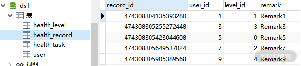
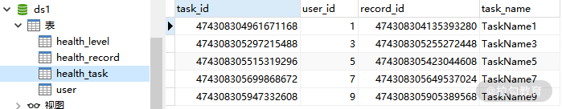

- 00 如何正确学习一款分库分表开源框架？.md.html
- 01 从理论到实践：如何让分库分表真正落地？.md.html
- 02 顶级项目：ShardingSphere 是一款什么样的 Apache 开源软件？.md.html
- 03 规范兼容：JDBC 规范与 ShardingSphere 是什么关系？.md.html
- 04 应用集成：在业务系统中使用 ShardingSphere 的方式有哪些？.md.html
- 05 配置驱动：ShardingSphere 中的配置体系是如何设计的？.md.html
- 06 数据分片：如何实现分库、分表、分库+分表以及强制路由？（上）.md.html
- 07 数据分片：如何实现分库、分表、分库+分表以及强制路由？（下）.md.html
- 08 读写分离：如何集成分库分表+数据库主从架构？.md.html
- 09 分布式事务：如何使用强一致性事务与柔性事务？.md.html
- 10 数据脱敏：如何确保敏感数据的安全访问？.md.html
- 11 编排治理：如何实现分布式环境下的动态配置管理？.md.html
- 12 从应用到原理：如何高效阅读 ShardingSphere 源码？.md.html
- 13 微内核架构：ShardingSphere 如何实现系统的扩展性？.md.html
- 14 分布式主键：ShardingSphere 中有哪些分布式主键实现方式？.md.html
- 15 解析引擎：SQL 解析流程应该包括哪些核心阶段？（上）.md.html
- 16 解析引擎：SQL 解析流程应该包括哪些核心阶段？（下）.md.html
- 17 路由引擎：如何理解分片路由核心类 ShardingRouter 的运作机制？.md.html
- 18 路由引擎：如何实现数据访问的分片路由和广播路由？.md.html
- 19 路由引擎：如何在路由过程中集成多种路由策略和路由算法？.md.html
- 20 改写引擎：如何理解装饰器模式下的 SQL 改写实现机制？.md.html
- 21 执行引擎：分片环境下 SQL 执行的整体流程应该如何进行抽象？.md.html
- 22 执行引擎：如何把握 ShardingSphere 中的 Executor 执行模型？（上）.md.html
- 23 执行引擎：如何把握 ShardingSphere 中的 Executor 执行模型？（下）.md.html
- 24 归并引擎：如何理解数据归并的类型以及简单归并策略的实现过程？.md.html
- 25 归并引擎：如何理解流式归并和内存归并在复杂归并场景下的应用方式？.md.html
- 26 读写分离：普通主从架构和分片主从架构分别是如何实现的？.md.html
- 27 分布式事务：如何理解 ShardingSphere 中对分布式事务的抽象过程？.md.html
- 28 分布式事务：ShardingSphere 中如何集成强一致性事务和柔性事务支持？（上）.md.html
- 29 分布式事务：ShardingSphere 中如何集成强一致性事务和柔性事务支持？（下）.md.html
- 30 数据脱敏：如何基于改写引擎实现低侵入性数据脱敏方案？.md.html
- 31 配置中心：如何基于配置中心实现配置信息的动态化管理？.md.html
- 32 注册中心：如何基于注册中心实现数据库访问熔断机制？.md.html
- 33 链路跟踪：如何基于 Hook 机制以及 OpenTracing 协议实现数据访问链路跟踪？.md.html
- 34 系统集成：如何完成 ShardingSphere 内核与 Spring+SpringBoot 的无缝整合？.md.html
- 35 结语：ShardingSphere 总结及展望.md.html
- 捐赠
09 分布式事务：如何使用强一致性事务与柔性事务？
你好，欢迎进入第 09 课时的学习。今天，我们将介绍一个分布式环境下的重要主题，即分布式事务。在介绍 ShardingSphere 中的具体应用方式之前，我们有必要对分布式事务的基本概念做简要介绍。
如何理解分布式事务？
在传统的关系型数据库中，事务是一个标准组件，几乎所有成熟的关系型数据库都提供了对本地事务的原生支持。本地事务提供了 ACID 事务特性。基于本地事务，为了保证数据的一致性，我们先开启一个事务后，才可以执行数据操作，最后提交或回滚就可以了。更进一步，借助于 Spring 等集成化框架，开发人员只需关注引起数据改变的业务即可。
但在分布式环境下，事情就会变得比较复杂。假设系统中存在多个独立的数据库，为了确保数据在这些独立的数据库中保持一致，我们需要把这些数据库纳入同一个事务中。这时本地事务就无能为力了，我们需要使用分布式事务。
业界关于如何实现分布式事务也有一些通用的实现机制，例如支持两阶段提交的 XA 协议以及以 Saga 为代表的柔性事务。针对不同的实现机制，也存在一些供应商和开发工具。因为这些开发工具在使用方式上和实现原理上都有较大的差异性，所以开发人员的一大诉求在于，希望能有一套统一的解决方案能够屏蔽这些差异。同时，我们也希望这种解决方案能够提供友好的系统集成性。
ShardingSphere 作为一款分布式数据库中间件，势必要考虑分布式事务的实现方案。而在设计上，ShardingSphere 从一开始就充分考虑到了开发人员的这些诉求，接下来让我们一起来看一下。
ShardingSphere 中的分布式事务
在 ShardingSphere 中，除本地事务之外，还提供针对分布式事务的两种实现方案，分别是 XA 事务和柔性事务。这点可以从事务类型枚举值 TransactionType 中得到验证：
public enum TransactionType {
LOCAL, XA, BASE
}
XA 事务
XA 事务提供基于两阶段提交协议的实现机制。所谓两阶段提交，顾名思义分成两个阶段，一个是准备阶段，一个是执行阶段。在准备阶段中，协调者发起一个提议，分别询问各参与者是否接受。在执行阶段，协调者根据参与者的反馈，提交或终止事务。如果参与者全部同意则提交，只要有一个参与者不同意就终止。

两阶段提交示意图
目前，业界在实现 XA 事务时也存在一些主流工具库，包括 Atomikos、Narayana 和 Bitronix。ShardingSphere 对这三种工具库都进行了集成，并默认使用 Atomikos 来完成两阶段提交。
BASE 事务
XA 事务是典型的强一致性事务，也就是完全遵循事务的 ACID 设计原则。与 XA 事务这种“刚性”不同，柔性事务则遵循 BASE 设计理论，追求的是最终一致性。这里的 BASE 来自基本可用（Basically Available）、软状态（Soft State）和最终一致性（Eventual Consistency）这三个概念。
关于如何实现基于 BASE 原则的柔性事务，业界也存在一些优秀的框架，例如阿里巴巴提供的 Seata。ShardingSphere 内部也集成了对 Seata 的支持。当然，我们也可以根据需要，集成其他分布式事务类开源框架，并基于微内核架构嵌入到 ShardingSphere 运行时环境中。
介绍完理论知识之后，接下来让我们分别使用 XA 事务和 BASE 事务来实现分布式环境下的数据一致性。
使用 XA 事务
在 Spring 应用程序中添加对 XA 事务的支持相对简单，无论是 Spring 框架，还是 ShardingSphere 自身，都为我们提供了低成本的开发机制。
开发环境准备
要想使用 XA 事务，我们首先要在 pom 文件中添加 sharding-jdbc-core 和 sharding-transaction-xa-core 这两个依赖：
<dependency>
<groupId>org.apache.shardingsphere</groupId>
<artifactId>sharding-jdbc-core</artifactId>
</dependency>
<dependency>
<groupId>org.apache.shardingsphere</groupId>
<artifactId>sharding-transaction-xa-core</artifactId>
</dependency>
在今天的案例中，我们将演示如何在分库环境下实现分布式事务，因此我们需要在 Spring Boot 中创建一个 .properties 文件，并包含分库需要的所有配置项信息：
spring.shardingsphere.datasource.names=ds0,ds1
spring.shardingsphere.datasource.ds0.type=com.zaxxer.hikari.HikariDataSource
spring.shardingsphere.datasource.ds0.driver-class-name=com.mysql.jdbc.Driver
spring.shardingsphere.datasource.ds0.jdbc-url=jdbc:mysql://localhost:3306/ds0
spring.shardingsphere.datasource.ds0.username=root
spring.shardingsphere.datasource.ds0.password=root
spring.shardingsphere.datasource.ds0.autoCommit: false
spring.shardingsphere.datasource.ds1.type=com.zaxxer.hikari.HikariDataSource
spring.shardingsphere.datasource.ds1.driver-class-name=com.mysql.jdbc.Driver
spring.shardingsphere.datasource.ds1.jdbc-url=jdbc:mysql://localhost:3306/ds1
spring.shardingsphere.datasource.ds1.username=root
spring.shardingsphere.datasource.ds1.password=root
spring.shardingsphere.datasource.ds0.autoCommit: false
spring.shardingsphere.sharding.default-database-strategy.inline.sharding-column=user_id
spring.shardingsphere.sharding.default-database-strategy.inline.algorithm-expression=ds$->{user_id % 2}
spring.shardingsphere.sharding.binding-tables=health_record,health_task
spring.shardingsphere.sharding.broadcast-tables=health_level
spring.shardingsphere.sharding.tables.health_record.actual-data-nodes=ds$->{0..1}.health_record
spring.shardingsphere.sharding.tables.health_record.key-generator.column=record_id
spring.shardingsphere.sharding.tables.health_record.key-generator.type=SNOWFLAKE
spring.shardingsphere.sharding.tables.health_record.key-generator.props.worker.id=33
spring.shardingsphere.sharding.tables.health_task.actual-data-nodes=ds$->{0..1}.health_task
spring.shardingsphere.sharding.tables.health_task.key-generator.column=task_id
spring.shardingsphere.sharding.tables.health_task.key-generator.type=SNOWFLAKE
spring.shardingsphere.sharding.tables.health_task.key-generator.props.worker.id=33
spring.shardingsphere.props.sql.show=true
实现 XA 事务
通过分库配置，我们将获取 SQL 执行的目标 DataSource。由于我们使用 Spring 框架而不是使用原生的 JDBC 进行事务管理，所以需要将 DataSource 与 Spring 中的事务管理器 PlatformTransactionManager 关联起来。
另一方面，为了更好地集成 ShardingSphere 中的分布式事务支持，我们可以通过 Spring 框架提供的 JdbcTemplate 模板类来简化 SQL 的执行过程。一种常见的做法是创建一个事务配置类来初始化所需的 PlatformTransactionManager 和 JdbcTemplate 对象：
@Configuration
@EnableTransactionManagement
public class TransactionConfiguration {
@Bean
public PlatformTransactionManager txManager(final DataSource dataSource) {
return new DataSourceTransactionManager(dataSource);
}
@Bean
public JdbcTemplate jdbcTemplate(final DataSource dataSource) {
return new JdbcTemplate(dataSource);
}
}
一旦初始化了 JdbcTemplate，就可以在业务代码中注入这个模板类来执行各种 SQL 操作，常见的做法是传入一个 PreparedStatementCallback，并在这个回调中执行各种具体的 SQL：
@Autowired
JdbcTemplate jdbcTemplate;
jdbcTemplate.execute(SQL, (PreparedStatementCallback<Object>) preparedStatement -> {
…
return preparedStatement;
});
在上面的代码中，我们通过 PreparedStatementCallback 回调获取一个 PreparedStatement 对象。或者，我们可以使用 JdbcTemplate 另一种执行 SQL 的代码风格，通过使用更基础的 ConnectionCallback 回调接口：
jdbcTemplate.execute((ConnectionCallback<Object>) connection-> {
…
return connection;
});
为了在业务代码中以最少的开发成本嵌入分布式事务机制，ShardingSphere 也专门提供了一个 @ShardingTransactionType 注解来配置所需要执行的事务类型：
@Target({ElementType.METHOD, ElementType.TYPE})
@Retention(RetentionPolicy.RUNTIME)
@Inherited
public @interface ShardingTransactionType {
TransactionType value() default TransactionType.LOCAL;
}
我们知道，ShardingSphere 提供的事务类型有三种，分别是 LOCAL、XA 和 BASE，默认使用的是 LOCAL。所以如果需要用到分布式事务，需要在业务方法上显式的添加这个注解：
@Transactional
@ShardingTransactionType(TransactionType.XA)
public void insert(){
…
}
另一种设置 TransactionType 的方式是使用 TransactionTypeHolder 工具类。TransactionTypeHolder 类中通过 ThreadLocal 来保存 TransactionType：
public final class TransactionTypeHolder {
private static final ThreadLocal<TransactionType> CONTEXT = new ThreadLocal<TransactionType>() {
@Override
protected TransactionType initialValue() {
return TransactionType.LOCAL;
}
};
public static TransactionType get() {
return CONTEXT.get();
}
public static void set(final TransactionType transactionType) {
CONTEXT.set(transactionType);
}
public static void clear() {
CONTEXT.remove();
}
}
可以看到，TransactionTypeHolder 中默认采用的是本地事务，我们可以通过 set 方法来改变初始设置：
TransactionTypeHolder.set(TransactionType.XA);
现在，使用 XA 开发分布式事务的整体结构的方法已经梳理清楚了，我们可以通过创建一个 insertHealthRecords 方法，在其中添加对 HealthRecord 和 HealthTask 的数据插入代码：
private List<Long> insertHealthRecords() throws SQLException {
List<Long> result = new ArrayList<>(10);
jdbcTemplate.execute((ConnectionCallback<Object>) connection-> {
connection.setAutoCommit(false);
try {
for (Long i = 1L; i <= 10; i++) {
HealthRecord healthRecord = createHealthRecord(i);
insertHealthRecord(healthRecord, connection);
HealthTask healthTask = createHealthTask(i, healthRecord);
insertHealthTask(healthTask, connection);
result.add(healthRecord.getRecordId());
}
connection.commit();
} catch (final SQLException ex) {
connection.rollback();
throw ex;
}
return connection;
});
return result;
}
可以看到，在执行插入操作之前，我们关闭了 Connection 的自动提交功能。在 SQL 执行完毕之后，手动通过 Connection commit 方法执行事务提交。一旦在 SQL 的执行过程中出现任何异常时，就调用 Connection 的 rollback 方法回滚事务。
这里有必要介绍执行数据插入的具体实现过程，我们以 insertHealthRecord 方法为例进行展开：
private void insertHealthRecord(HealthRecord healthRecord, Connection connection) throws SQLException {
try (PreparedStatement preparedStatement = connection.prepareStatement(sql_health_record_insert, Statement.RETURN_GENERATED_KEYS)) {
preparedStatement.setLong(1, healthRecord.getUserId());
preparedStatement.setLong(2, healthRecord.getLevelId() % 5 );
preparedStatement.setString(3, "Remark" + healthRecord.getUserId());
preparedStatement.executeUpdate();
try (ResultSet resultSet = preparedStatement.getGeneratedKeys()) {
if (resultSet.next()) {
healthRecord.setRecordId(resultSet.getLong(1));
}
}
}
}
首先通过 Connection 对象构建一个 PreparedStatement。请注意，由于我们需要通过 ShardingSphere 的主键自动生成机制，所以在创建 PreparedStatement 时需要进行特殊地设置：
connection.prepareStatement(sql_health_record_insert, Statement.RETURN_GENERATED_KEYS)
通过这种方式，在 PreparedStatement 完成 SQL 执行之后，我们就可以获取自动生成的主键值：
try (ResultSet resultSet = preparedStatement.getGeneratedKeys()) {
if (resultSet.next()) {
healthRecord.setRecordId(resultSet.getLong(1));
}
}
当获取这个主键值之后，就将这个主键值设置回 HealthRecord，这是使用自动生成主键的常见做法。
最后，我们在事务方法的入口处，需要设置 TransactionType：
@Override
public void processWithXA() throws SQLException {
TransactionTypeHolder.set(TransactionType.XA);
insertHealthRecords();
}
现在让我们执行这个 processWithXA 方法，看看数据是否已经按照分库的配置写入到目标数据库表中。下面是 ds0 中的 health_record 表和 health_task 表：

ds0 中的 health_record 表

ds0 中的 health_task 表
下面则是 ds1 中的 health_record 表和 health_task 表： 
ds1 中的 health_record 表

ds1 中的 health_task 表
我们也可以通过控制台日志来跟踪具体的 SQL 执行过程：
2020-06-01 20:11:52.043 INFO 10720 --- [ main] ShardingSphere-SQL : Rule Type: sharding
2020-06-01 20:11:52.043 INFO 10720 --- [ main] ShardingSphere-SQL : Logic SQL: INSERT INTO health_record (user_id, level_id, remark) VALUES (?, ?, ?)
…
2020-06-01 20:11:52.043 INFO 10720 --- [ main] ShardingSphere-SQL : Actual SQL: ds1 ::: INSERT INTO health_record (user_id, level_id, remark, record_id) VALUES (?, ?, ?, ?) ::: [1, 1, Remark1, 474308304135393280]
…
现在，让我们模拟事务失败的场景，可以在代码执行过程中故意抛出一个异常来做到这一点：
try {
for (Long i = 1L; i <= 10; i++) {
HealthRecord healthRecord = createHealthRecord(i);
insertHealthRecord(healthRecord, connection);
HealthTask healthTask = createHealthTask(i, healthRecord);
insertHealthTask(healthTask, connection);
result.add(healthRecord.getRecordId());
//手工抛出异常
throw new SQLException("数据库执行异常!");
}
connection.commit();
} catch (final SQLException ex) {
connection.rollback();
throw ex;
}
再次执行 processWithXA 方法，基于 connection 提供的 rollback 方法，我们发现已经执行的部分 SQL 并没有提交到任何一个数据库中。
使用 BASE 事务
相较于 XA 事务，在业务代码中集成 BASE 事务的过程就显得相对复杂一点，因为我们需要借助外部框架来做到这一点。这里，我们将基于阿里巴巴提供的 Seata 框架来演示如何使用 BASE 事务。
开发环境准备
同样，要想使用基于 Seata 的 BASE 事务，我们首先需要在 pom 文件中添加对 sharding-jdbc-core 和 sharding-transaction-base-seata-at 这两个依赖：
<dependency>
<groupId>org.apache.shardingsphere</groupId>
<artifactId>sharding-jdbc-core</artifactId>
</dependency>
<dependency>
<groupId>org.apache.shardingsphere</groupId>
<artifactId>sharding-transaction-base-seata-at</artifactId>
</dependency>
因为用到了 Seata 框架，所以也需要引入 Seate 框架的相关组件：
<dependency>
<groupId>io.seata</groupId>
<artifactId>seata-rm-datasource</artifactId>
</dependency>
<dependency>
<groupId>io.seata</groupId>
<artifactId>seata-tm</artifactId>
</dependency>
<dependency>
<groupId>io.seata</groupId>
<artifactId>seata-codec-all</artifactId>
</dependency>
然后，我们下载并启动 Seata 服务器，这个过程需要设置 Seata 服务器 config 目录下的 registry.conf，以便指定注册中心，这里使用 ZooKeeper 来充当注册中心。关于如何启动 Seata 服务器的过程可以参考 Seata 的官方文档。请注意，按照 Seata 的运行要求，我们需要在每一个分片数据库实例中创建一张 undo_log 表。然后，我们还需要在代码工程中 classpath 中增加一个 seata.conf 配置文件：
client {
application.id = health-base
transaction.service.group = health-base-group
}
现在，在 src/main/resources 目录下的文件组织形式应该是这样：

当然，这里我们还是继续沿用前面介绍的分库配置。
实现 BASE 事务
基于 ShardingSphere 提供的分布式事务的抽象，我们从 XA 事务转到 BASE 事务唯一要做的事情就是重新设置 TransactionType，也就是修改一行代码：
@Override
public void processWithBASE() throws SQLException {
TransactionTypeHolder.set(TransactionType.BASE);
insertHealthRecords();
}
重新执行测试用例，我们发现在正常提交和异常回滚的场景下，基于 Seata 的分布式事务同样发挥了效果。
小结
分布式事务是 ShardingSphere 中提供的一大核心功能，也是分布式环境下数据处理所必须要考虑的话题。ShardingSphere 提供了两种处理分布式事务的实现方式，分别是基于强一致性的 XA 事务，以及基于最终一致性的 BASE 事务。今天，我们结合案例对这两种事务的使用方式做了详细的介绍。
这里给你留一道思考题：当使用 ShardingSphere 时，在业务代码中嵌入分布式事务有哪些开发方式？
本课时的内容就到这里。在下一课时中，我们将介绍 ShardingSphere 中提供了与数据访问安全性相关的一个话题，也就是通过数据脱敏完成对敏感数据的安全访问。
© 2019 - 2023 Liangliang Lee. Powered by gin and hexo-theme-book.